Create a Website that People Love…
Web Design Principals:-
Introduction to Web Design
Now today I want to talk about something a little bit different namely how to design websites so that

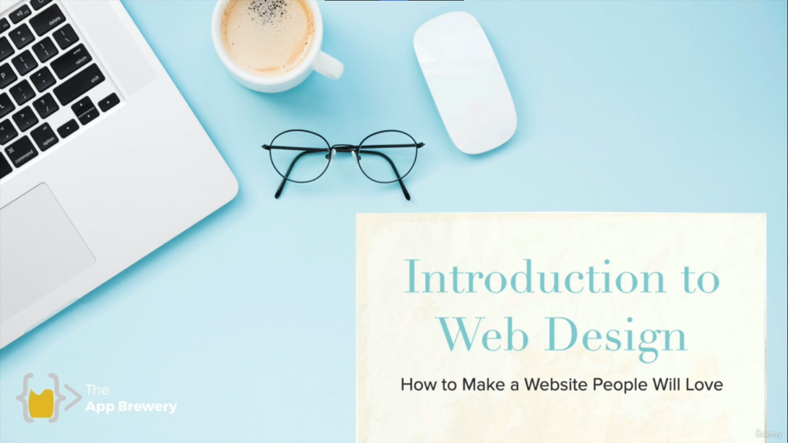
not only does your website have great functionality but it also looks beautiful.
The most important thing to making a website loved by users is pretty much the design.
After all, think about it.
When was the last time you heard somebody tell you, "Hey I came across this great website.
It worked really really well.
So smooth and no bugs."
Nobody ever says that right?
They say things like: "It looked so beautiful. It just worked like I wanted it to."
So today we're going to talk about design and I want to show you some of the different aspects of design
when it comes to websites.
Now more often than not, you've heard the saying right?
"Don't judge a book by its cover."

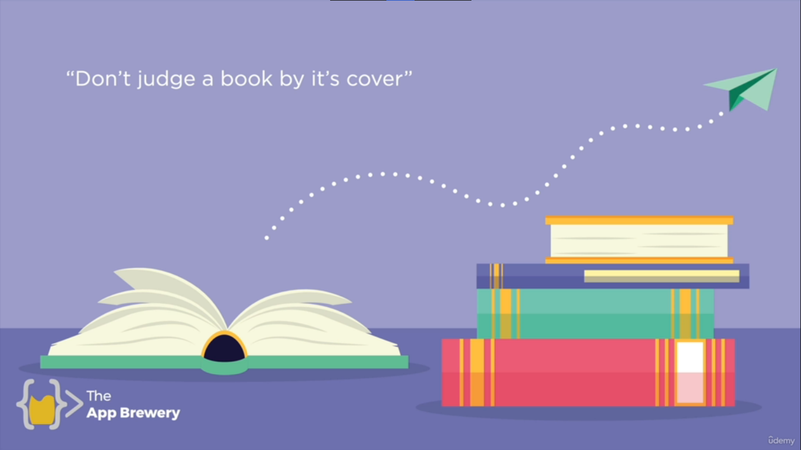
Now at the same time, you might have also heard of this saying: "You only have three seconds to make a
good impression."

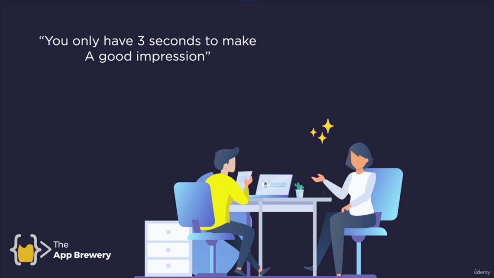
Now when it comes to web design, the latter is probably more accurate.
It's just like a job interview or a first date, your website has a crucial few seconds before the user
is going to judge your company, your brand, your product.
So take a look at this example.
This is a website called Penny juice and it's a company that sells children's juice cartons.

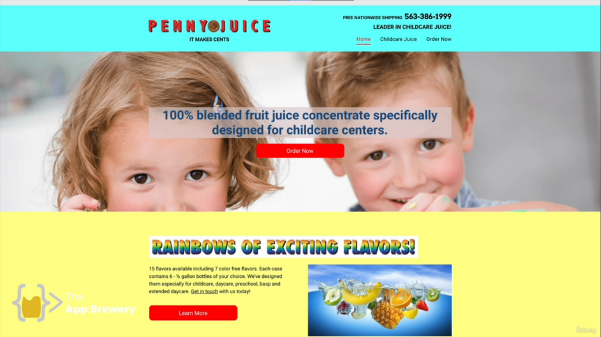
Now look at the design of it. There's clashing colors, there's different typefaces, there's different colors
for the text and they have different fonts and it's all, to be honest, a bit of a mess.
So this is a question I often ask students at this point.
Take a look at this website and ask yourself if you were to buy a product from this company,
if you were to buy a carton of juice, how much would you pay for it?
Now take a look at this website.

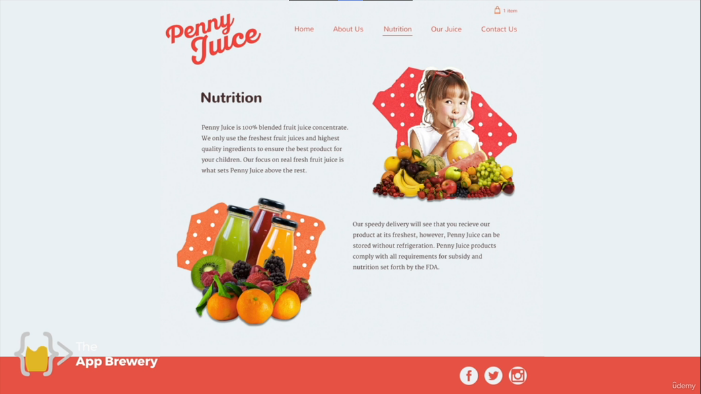
This is the same website reimagined by a professional web designer.
Look at how the color scheme is now consistent, how the fonts and the typefaces now look a lot better.
And ask yourself again, how much would you pay for a single carton of juice from this website.
Now I've asked this question to a number of people and this is the result I got.
People are willing to pay anywhere up to only a dollar for a carton of juice from the first website
but anywhere up to $3 for the second website.
Now I run a startup and a lot of friends and colleagues of mine also work on their own businesses.
And we usually spend a lot of time brainstorming, how can we make our product better,
how do we make our brand stronger.
And there's very very few things that we can think of that can actually produce a three times improvement
in the value of your product or in the value of your company.
So design is really really powerful.
It's one of the cheapest ways to make your company or your product look expensive because it's elevating.
And it doesn't take a lot to get good at design as you'll see in the coming lessons.
So we're going to be exploring some of the principles of web design in this module.
And I want to take you through everything from color theory to typography to user interface design and
user experience design.

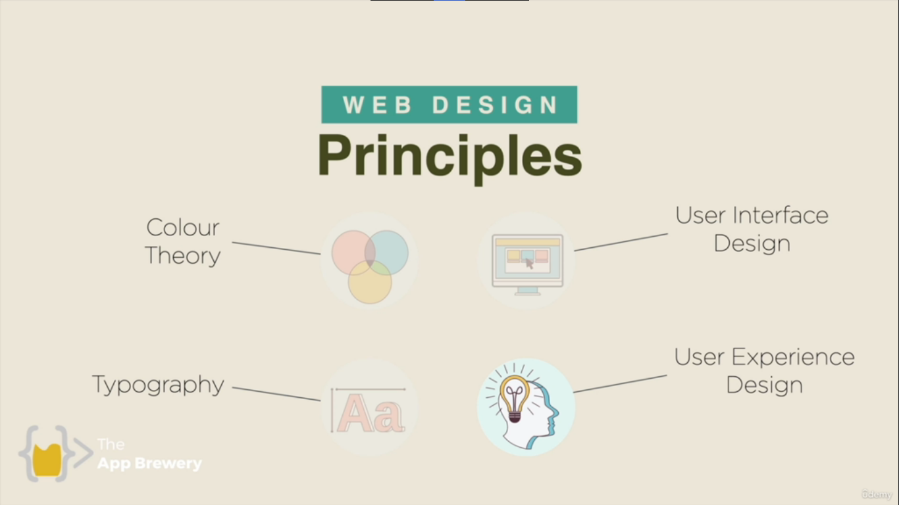
These are the four pillars of good web design.
So once you are ready, head over to the next lesson and let's get started.
Understanding Color Theory
Now one of the first things I want to talk about is Color Theory. And color theory is the art and science
of creating the right palette for your website.

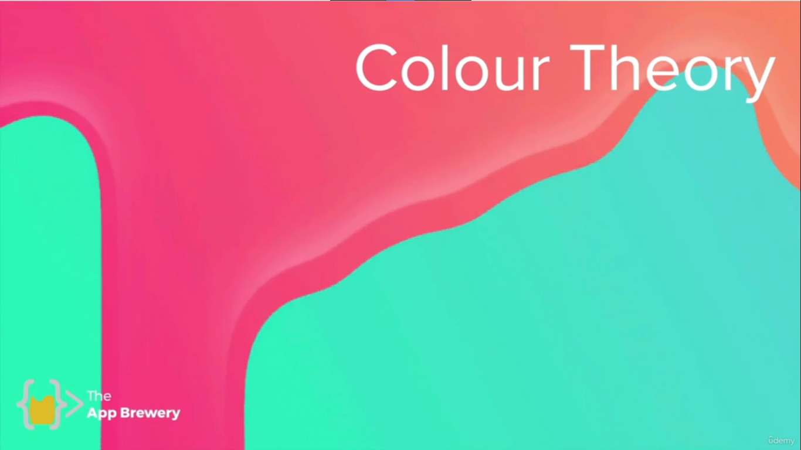
So take a look at this example.
Now let's say you had a logo where you have flowers which are brown, paintball which is pink.

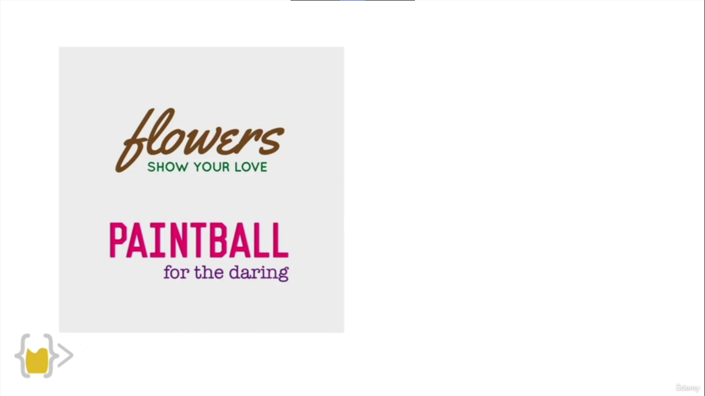
It looks all very weird and very inconsistent.
And take a look at the actual logos. Like what are you thinking when you see these color palettes on
the words. The color of the flowers looks a bit like dirt I guess but it also looks a bit like something
else. And the paint ball being pink
I'm not really sure who that target audience is. But take a look at this.

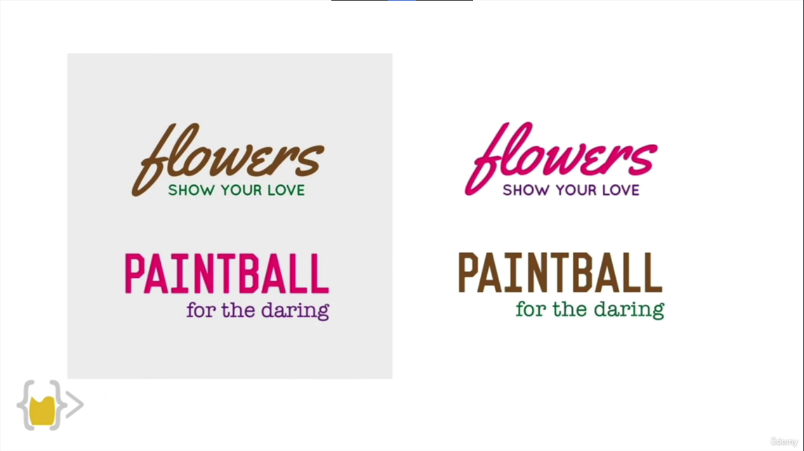
If we flip the color palette, it suddenly all looks like it's meant to be like this.
It suddenly all looks a lot better right?
It looks consistent with the actual message.
So when you're picking colors you have to be aware of the mood of your color palette.

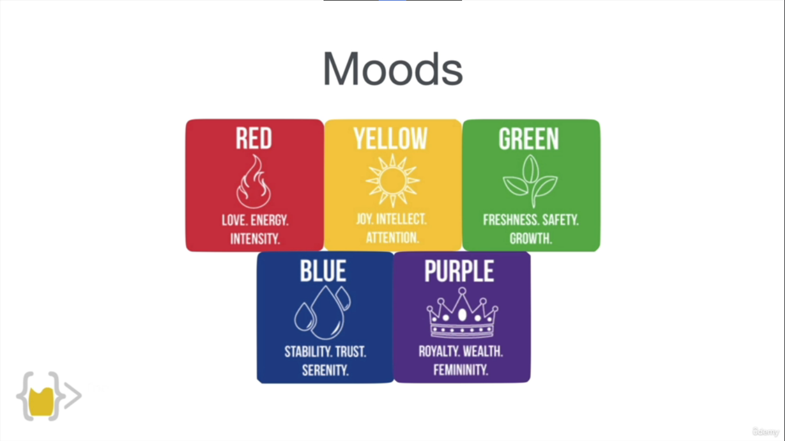
So the predominant color that is going to be in your design really tells a story and it conveys a message
to the user.
For example, Red conveys love, energy, intensity. Which is why you see a lot of car adverts which have a
red car on a red background.

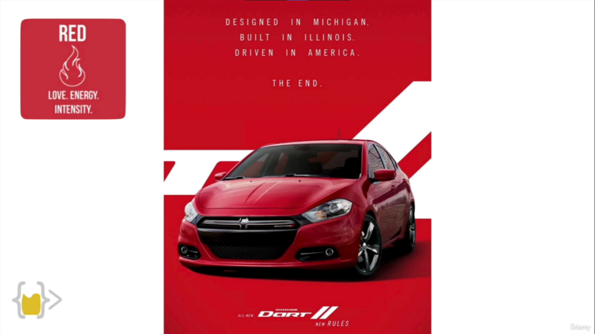
It's because they're trying to tell you,
"Hey buy this car and you'll feel energetic
and the intensity of this car even if you're 89."
Now yellow is more about joy, intellect, attention.

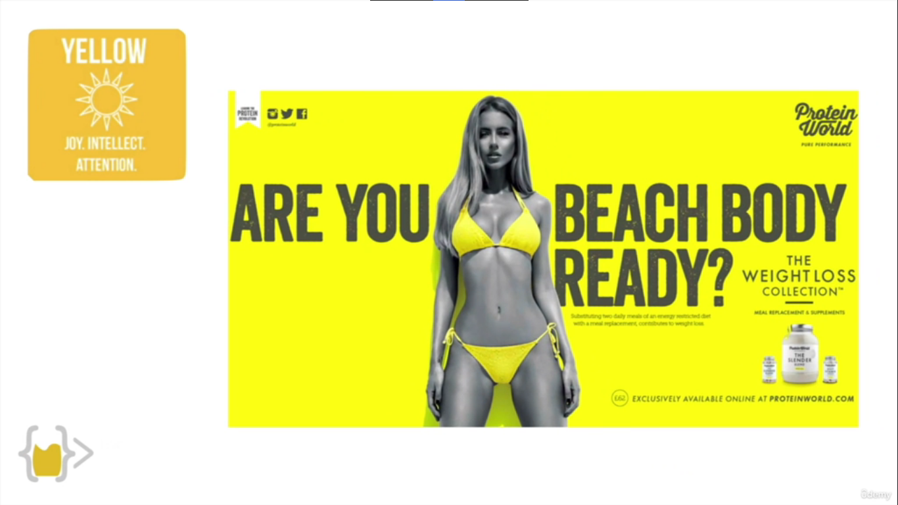
And the most important thing about yellow though is how attention grabbing it is because it's almost
impossible to not look at something that is very yellow.
For example this ad. Now a few years back
this ad caused an uproar because it has this lady in a yellow bikini
and it says, "Are you
beach body ready?"
And a lot of people got really really upset about it.
They took to the Internet,
they raved about it.
And I remember thinking to myself at the time, "You know, this is not so different from a lot of the other
ads that are trying to tell women how to look."
And it's not a great message.
But why is it causing so much anger and causing so much attention drawn to it?
And I think the reason is because it's actually bright yellow.
It's impossible to ignore this advert when you come across it.
So when you're creating a logo or when you're creating some sort of headline, then yeah yellow is a great
choice. But when you're creating something that's designed to be looked at for a long period of time
then yellow can be too attention grabbing. It might actually hurt your user's eyes
if you tried to read a whole article that's backgrounded in yellow.
Now the next color that we're going to talk about is green which is all about freshness, growth, safety.

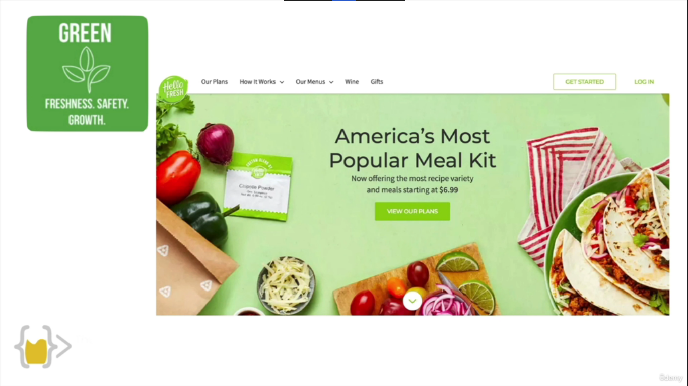
And that's why you see a lot of grocery companies like Hello Fresh or Amazon groceries use this color
as their predominant color palette. Because it's trying to tell you, "Hey look! This thing is edible.
This is what we're selling."
And so if you have a company that has anything to do with food, this is usually a safe bet to go with.
Now Blue is about stability, trust, serenity. And so you see a lot of companies which need to convey that

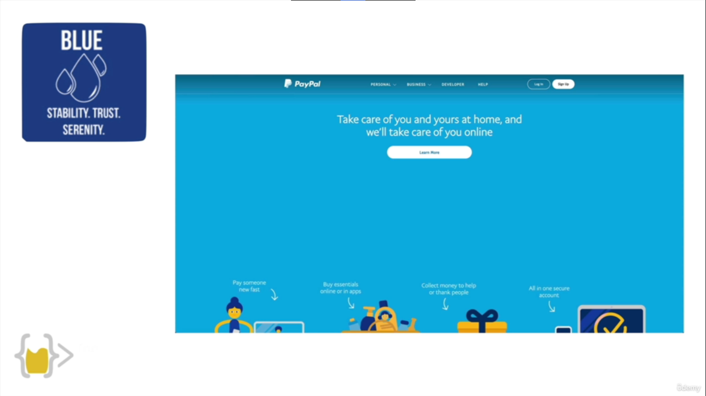
"Hey, we're really trustworthy"
use this color. For example,
look at all the financial companies, look at companies like PayPal or the cryptocurrency companies like
Coin base. They all choose this color because they want you to know that they're not going to run away
with your money.
In fact, there was a really interesting psychology study where they compared interviewees wearing different
colored shirts.
So for example, a group of them would wear a green shirt,
another group would wear a blue shirt and they compared how they were perceived by the interviewers.
And it showed that just by changing the color of your shirt to a blue one you vastly increase the amount
of trust in you
that's given by other people.
So have a think about that the next time you're going for an interview.
Now the final color is purple and it's meant to signify royalty, wealth, femininity. And strangely enough

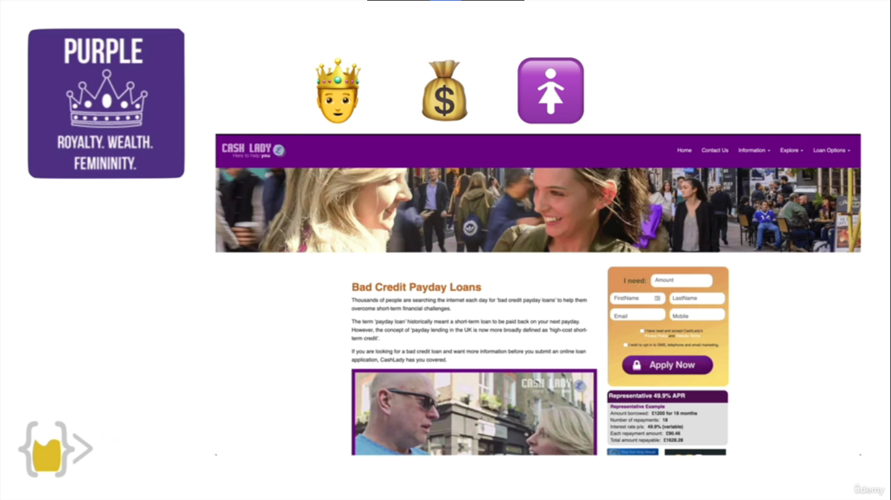
I've come across a number of payday loan companies which use this color palette especially ones which
are targeted at women.
So, the important thing to think about is that you're making a conscious decision when you're choosing
a color palette.
It's not just whichever color you like or your favorite color. But it's actually 'what message am I trying
to convey to the user' and then picking an appropriate color.
Now, usually you're not just going to be
using a single color for your design. You're probably going to be using two or three.

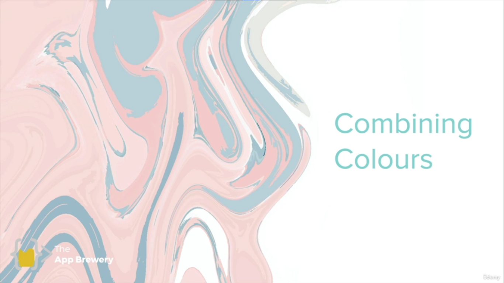
So at some point you have to think about which different colors to combine.
And this is probably the most scientific part of color theory.
Now very often, designers will rely on scientific ways of combining colors. For example taking two colors
that are right next to each other on the color wheel.
And this way you create what's called an analogous color palette.

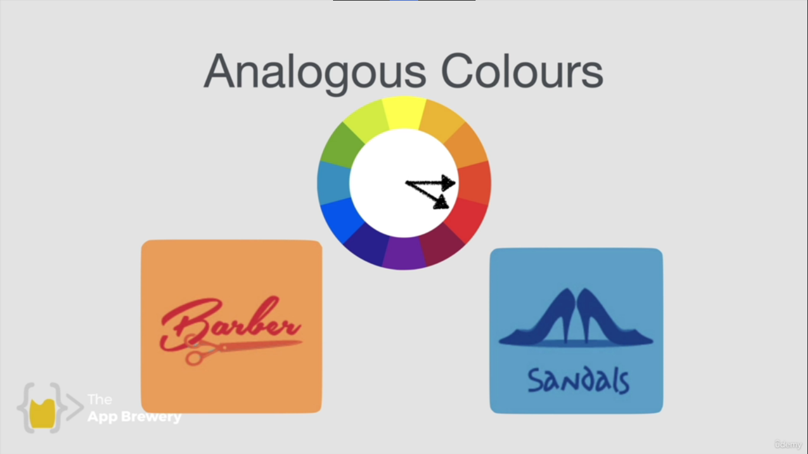
And these designs look incredibly harmonious and they really work well together.
So this color palette can be really good for things like navigation bars and the body of your website
or things like a logo and it's background.
Now, what it's not so good at though is standing out. If you really want your design to pop, you're better
off taking two colors from opposite ends of the color wheel creating what's called a complementary color
palette or a clashing palette.

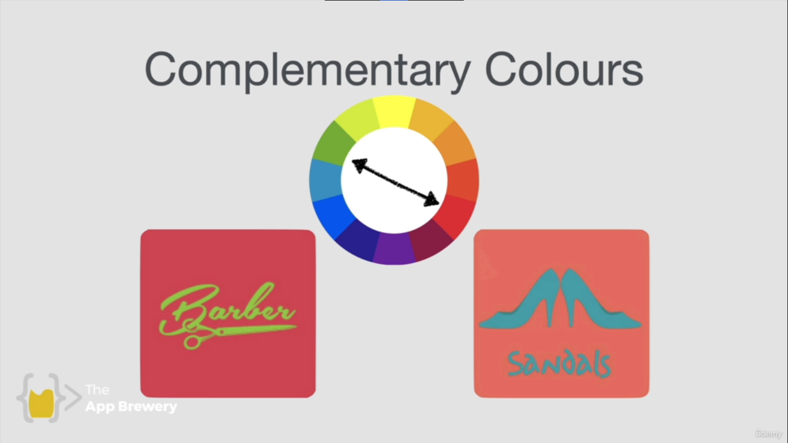
Now this complementary color palette really creates that pop.
And it really brings out each of the colors.
So the next time you go to a supermarket, I want you to take a look at the meat aisle and see if they've
used this complementary color palette to make things pop.

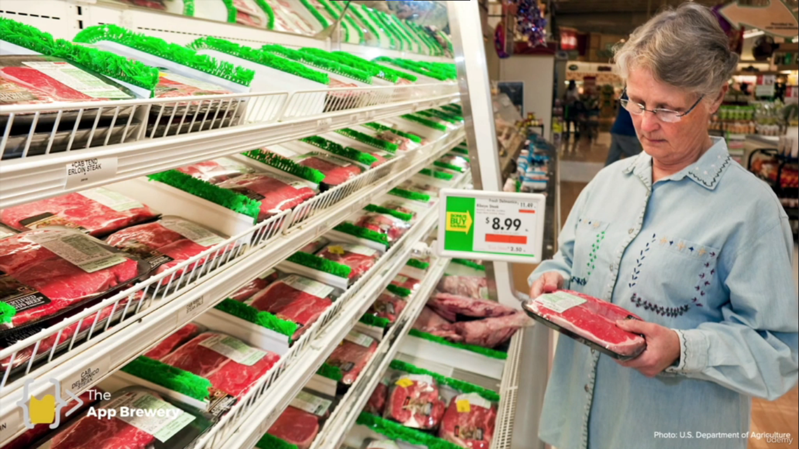
So, one of the things that you often see is they'll take these fake plastic bits of greenery like fake
grass or fake bushes and they'll put it in between the meat. And because the green and the red are complementary
colors it makes the red meat pop out a lot more and gives you this idea of freshness
even if it's a little bit past the best dates.
But what you shouldn't do with clashing colors or complementary

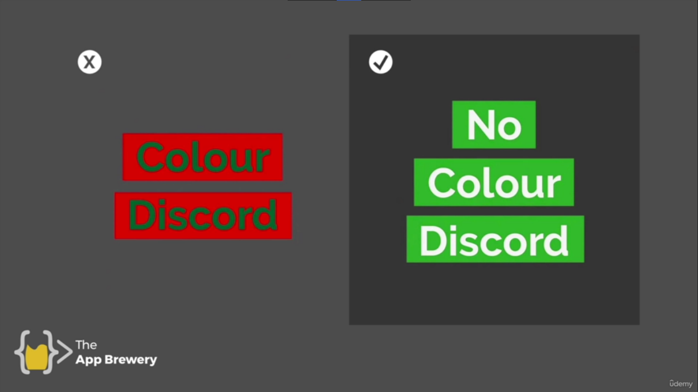
colors is to try to style text and text background with it because it actually looks very very jarring
and you can feel your eyes sort of getting a little bit fuzzy
looking at this particular combination. So don't do this when it concerns text.
Instead, keep it to things like logos or icons or things that you really really want to stand out from
each other.
Now, there's a lot of other ways that you can combine colors like drawing an equilateral triangle to
create a triadic color palette or drawing a perfect square.

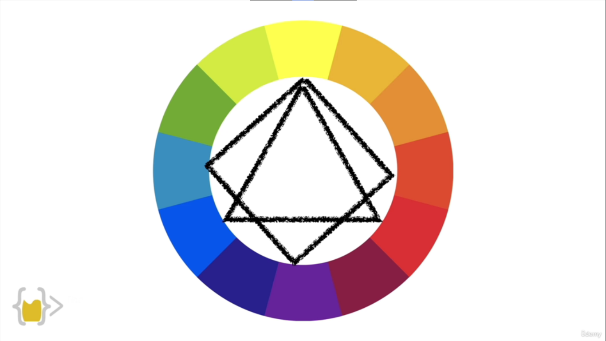
Now if you want to, you can head over to a website called Adobe color which lets you mess around with
all of these different color combinations. So select a triadic color palette or a square color palette
and then drag it around the color wheel so that you get different combinations of colors.
And once you come across a palette that fits the mood of your project, then you can pick the hex codes
and just put them straight into your website.
Now if all of that sounds like it was a little bit too much work ,then I got you covered.
You can also use a website called colorhunt.co.
This is a website where professional designers have curated some of their favorite color palettes
and you can nab the hex codes straight off the website.
So take a look at the hot and popular sections of this website and use it to guide the pilot scheme
for your next project.
Now when you create a website that has a beautiful consistent color scheme like the one for the LIEBE
yogurt, you can see how much it makes the design stand out and it becomes really colorful and really

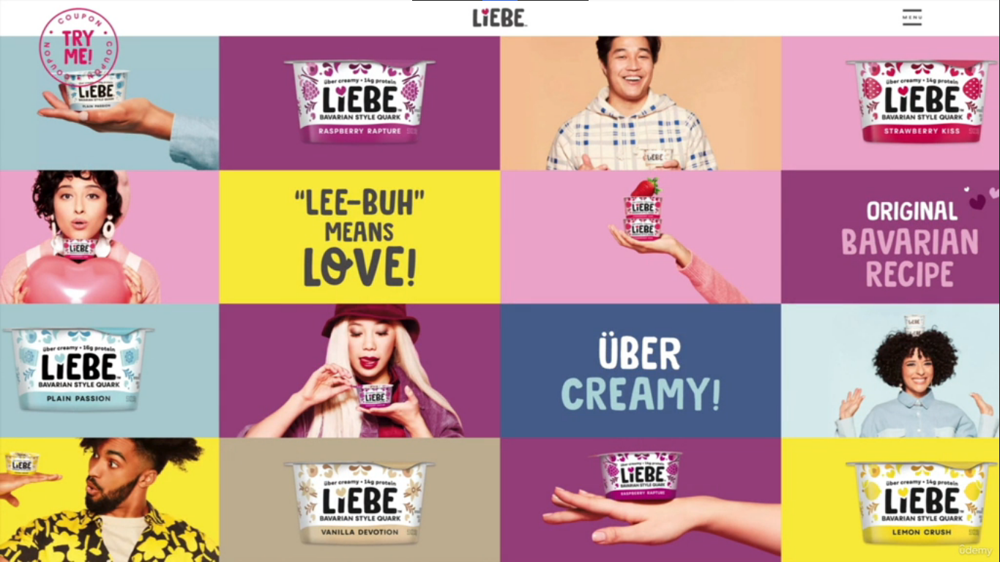
playful and you can convey different messages using your choice of colors and your color scheme.
So think about your color choice and your color palette
the next time you design your website to make sure that it is consistent with what your brand is about
and what your product is about and it conveys the message you want to convey.
Understanding Typography and How to Choose a Font
The next topic I want to talk about is typography.

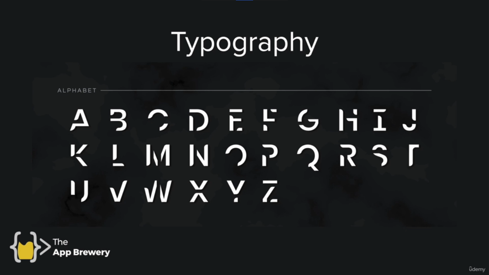
Now, I know a lot of students always say to me
"But why do I need to learn about typography?
I just open up Word, click the dropdown,
find Times New Roman,
my favorite font.

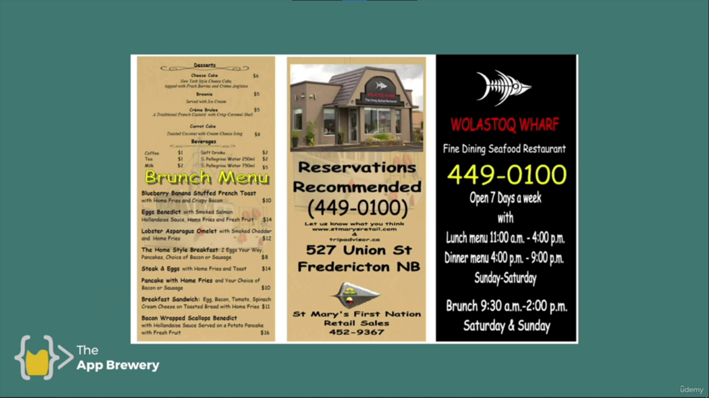
And then just put that on everything. It's done right?"
Well let's think about this.
Well let's say it's Valentine's Day and you decide that you want to write a letter to your beloved Valentine
and you change the font to something cursive like this.

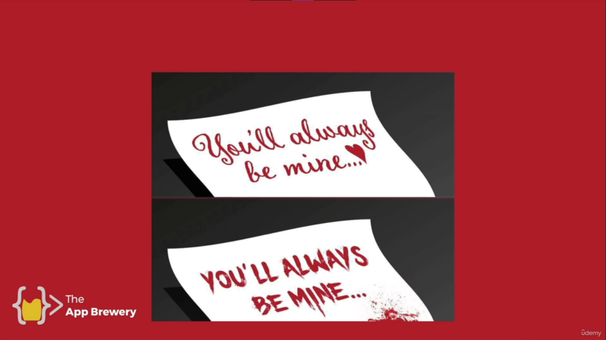
"You'll always be mine."
I don't know if she or he will be
but you have a good chance.
Now let's say that you chose the wrong font.
That's a bit of a problem.
Not only do I not think your Valentine is going to take very kindly to this,
you might also have the police on your back which is a bit of a problem.
So fonts really do matter and it's important to consider not only their mood but also how to combine
different fonts.
And it's a really really easy way to make your designs look very professional and really slick. Out of
all of the fonts in the world
there's pretty much two large families that you should really know about.

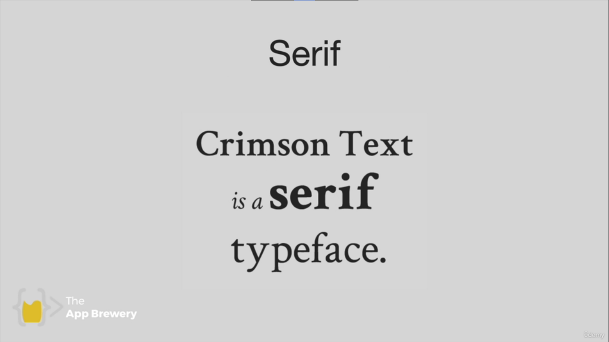
One is the Serif family where they have these little feet at the end of their central beams.
And the reason why they have these old feet is because the Serif typeface were inspired by the marble
carvings of days of yore.
So if you next go out and you take a look at the buildings around you especially if you're in a historical
area, take a look at places where they've carved into stone or marble and you'll notice that they also
have these little feet at the end of the central beams.

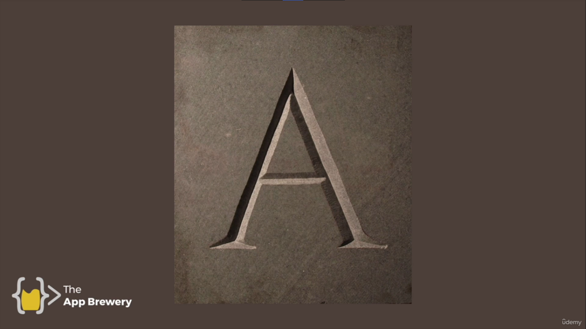
So why is that?
I don't know how many of you carved marble in your spare time but if you did you would know that once
you chisel has gone into the Rock and you need to exit your engraving it's actually not possible to
create 90 degree angles when you're carving into rock.
So this is where the Serif typeface gets their inspiration from.
And this is also the reason why when you're choosing a Serif typeface you're making your design look
more serious, more authoritative and also a little bit older as well.
So it's really good if you're designing something like a letterhead for a legal company or a magazine
for architectural design.
But when we take a look at the big family of Serif typefaces
they're actually further subdivided into smaller sub families like Old style, Transitional, Modern and
Slab-Serif.

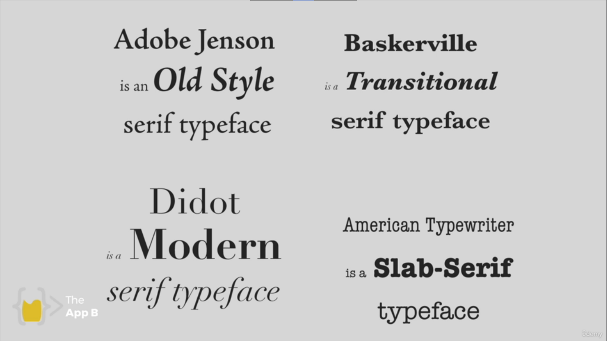
Now the really interesting thing is you can actually tell how old a typeface would look by looking at
the difference between the thickest and the thinnest parts of each letter.

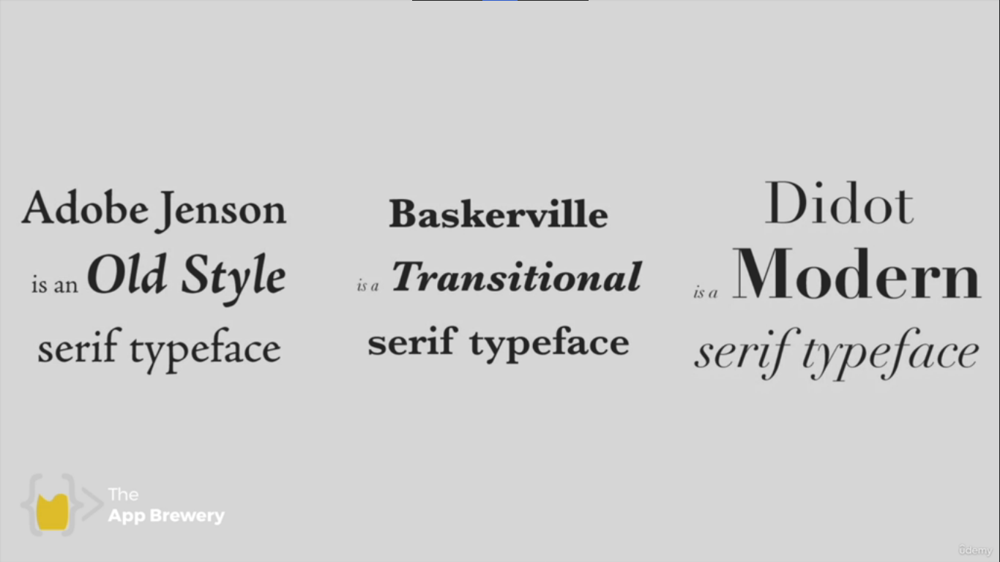

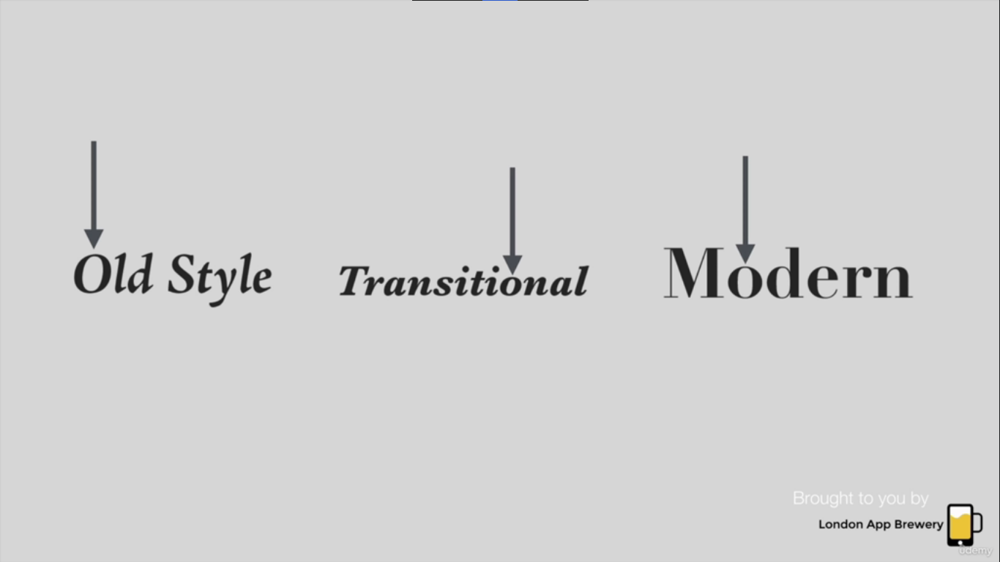
So compare the Old Style 'o' versus the Transitional
'o' versus the modern
'o'. And look at how that difference between the thickest part of the letter and the thinnest part gets
more and more exaggerated as you get towards a more modern font.
So if you want something that looks authoritative but modern then maybe you want to go for a modern
Serif typeface like Didot. But if you want it to come across as a little bit older, a little bit more aged
maybe you have a winery, maybe you want to go for an Old Style Serif instead.
Now just as different colors have different moods and emotions, different fonts also have different moods
and they also convey a different message to a user depending on which one you choose.

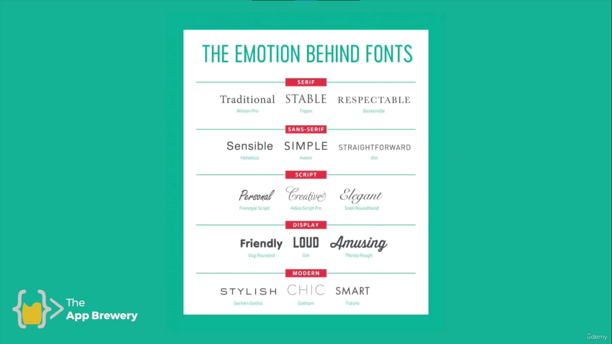
So the Serif family generally come across as traditional, stable, respectable, authoritative.
These are the words that get thrown around by designers when they're thinking about the Serif typeface.
So for example, the next time you go to a magazine rack pick up the Vogue magazine.

Take a look at their title and see how it's a modern Serif typeface.
It's got hugely exaggerated difference between the thick and thin parts of the lettering and it looks
authoritative and it knows what it is talking about.
Now on the other hand, if we think about the San-Serifs, they're kind of a different family because instead
of having the Serifs or the little feet at the end the central beams, they have perfect right angles.

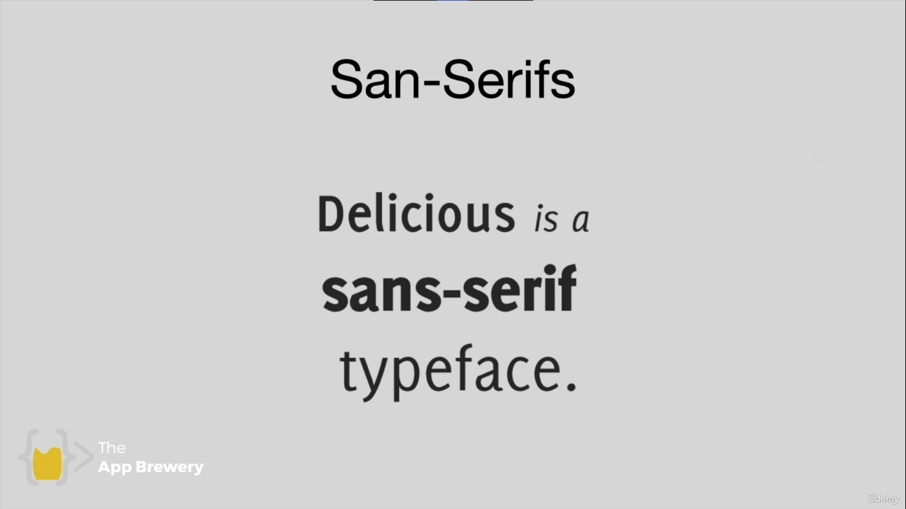
And it's this right angle that makes the San-Serif family look so much more friendly, more approachable,
more novel and more contemporary.
So for example, you will tend to get words like sensible, simple, straightforward. And this is why a lot
of startups love using the San-Serif typeface in their websites.

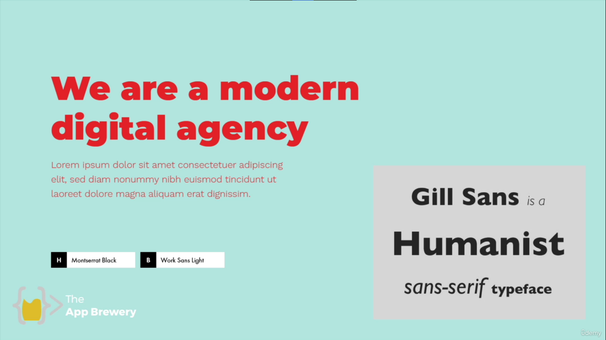
For example, a Humanist typeface which is a subfamily of the San-Serifs. It's something that is known

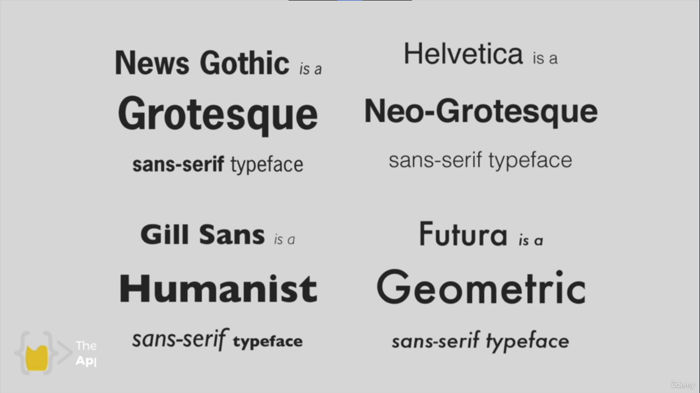
as a highly readable typeface. And in fact, even within the Serifs and the San-Serifs, you will tend to
see designers going for the San-Serifs if they want to write body text which needs to be more legible
and more readable.
Now within this sub family, there's even differences in terms of legibility and readability.

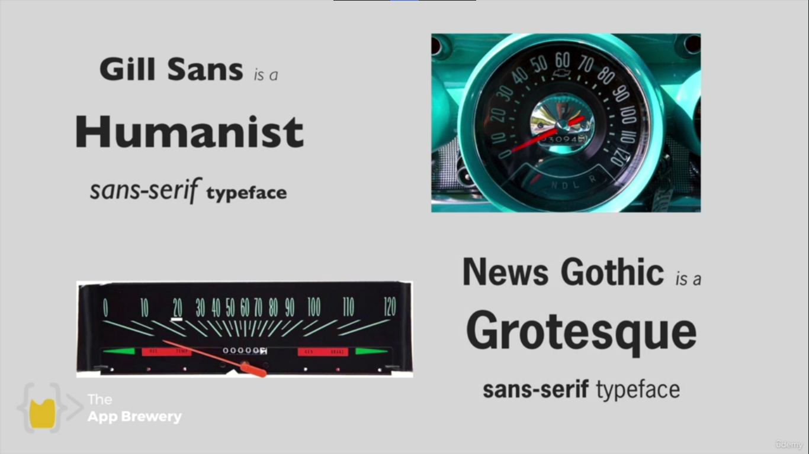
So how easy are the words to read and how pleasant is it to read the letters.
There was a really interesting study done by MIT a few years back where they took two groups of users,
one they put them into a car which had a dashboard made of a Humanist typeface and the other car had
a dashboard which had a Grotesque San-Serif typeface. And what they did is they tracked the pupils of
the people who were driving the cars and they tested how long each driver needed to look down at the
dashboard before they got enough information from the speedometer or the odometer and before they could
come back and look at the road again. And really surprisingly they found that just by changing the font
from a Grotesque San-Serif to a Humanist San-Serif, they could save the drivers somewhere around
30 to 40 percent of the time that's required to understand the information.
So imagine that car is on a freeway that's driving at 60 miles, 100 miles an hour.
That difference in the amount of time the user needs to look down at the dashboard could be the difference
between life and death.
And as designers, we rarely get to make that kind of difference in the world right?
So knowing that the Humanist typeface, all of the fonts that belong in that category like Gill Sans,
Tahoma, Verdana, these are highly readable and highly legible fonts which you can use in the body types
for example of your sales pitch.
Now, even though we're not saving lives with our sales pitches,
if you manage to get the user to read through more of your sales copy then they're probably going to
be more convinced and more likely to buy your product
right?
So readability and legibility when you're choosing fonts is incredibly important. And the things that

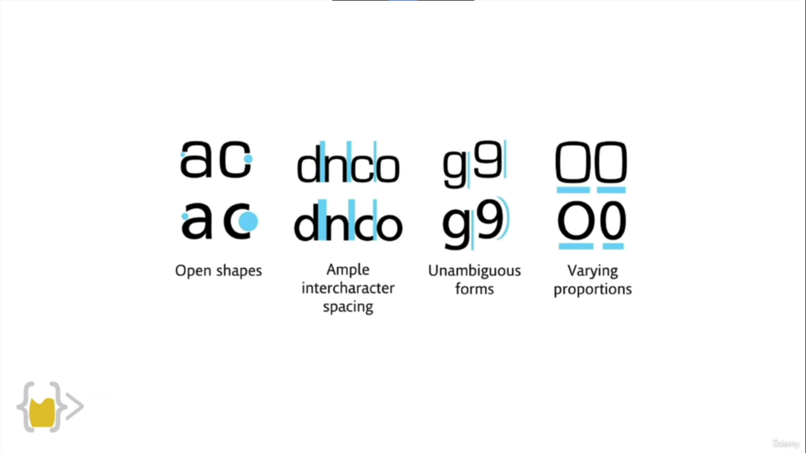
you're looking for in the letters when you're looking for legibility are open shapes and a lot of space
between each of the letters and also the forms look unambiguous so they look different
for example here the 'g' and the 9 actually look different on the second line. And finally, varying proportions.
So having an 'O' that's very wide and a '0' that's a bit more narrow so you can actually tell the difference
between the two.
Now while we've talked about using fonts it's often that you see people go a bit overboard where they
choose 10 fonts in the same design. And that makes your design look very cluttered and very unprofessional.

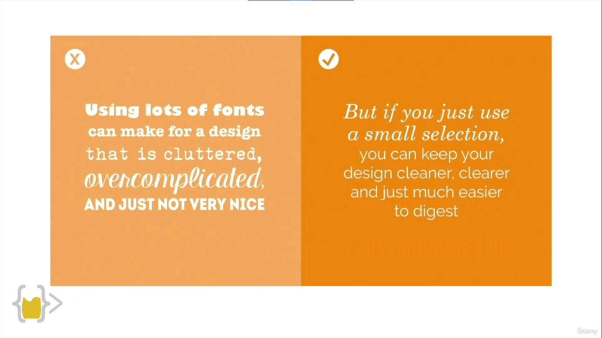
I recommend actually sticking to just two fonts in one design.
So if you're making a poster keeping that to two fonts. If you're making a section of your website keeping
then again to two fonts. It just looks a lot cleaner and a lot tighter.
And when you're combining these two different fonts you want to try to go for similar moods. So find
fonts that have a similar mood to each other and also a similar time era.

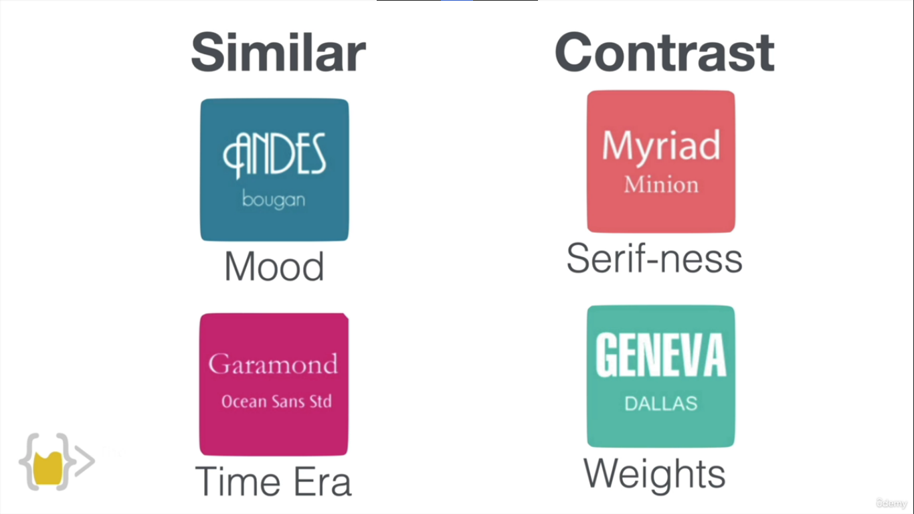
You don't want something that looks ultramodern with something that looks like it's from the days of
yore combined together. It looks a little bit weird.
Now the things you want to contrast are the serif-ness.
So for example you on the heading to be a Serif and the body to be a San-Serif or the opposite way
round. It just creates more interest in your design.
And similarly, you can also create interest by just changing up the weights between the heading and the
body. So making the heading really really bold or even using a black typeface and making the body text
using something like thin or regular or light. These different weights can create contrast in your design.
Now if you don't remember anything from this talk on typefaces, I just want you to look at these six

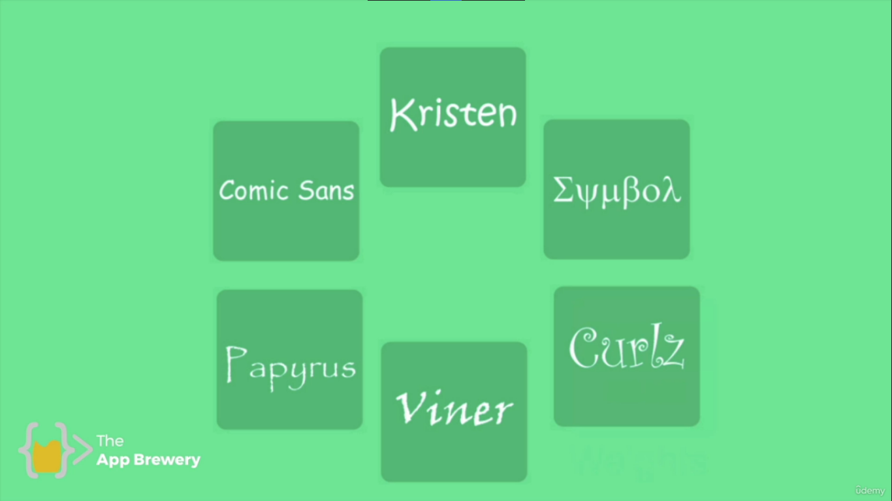
fonts and try to wipe them from your memory because it is very very difficult to make these designs
look good unless I guess if you're running a lemonade stand.

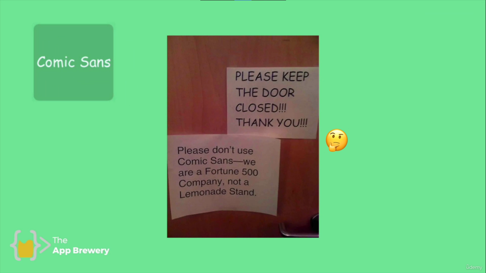
But if you want to look professional, if you want to look designs, try to use one of the other fonts that
we've talked about and try to ignore these ones which are difficult to read and have moods that are
difficult to fit in in a professional setting.
The next time you're designing a website think about what typefaces you're going to choose.
Think about what you're trying to convey with those typefaces and then pick a font from the San-Serif
or the Serif family and maybe try to combine them
so you have a heading that's a San-Serif and a body that's a Serif and try to create contrast in your
designs.
So keep this in mind and hopefully they'll make your designs a lot more interesting and a lot more professional.
Manage ATTENTION with effective User Interface (UI) Design
Overview:-
So now that we've talked about some of the fundamentals of design like Color Theory and Typography, the
next thing I want to talk about is User Interface Design.

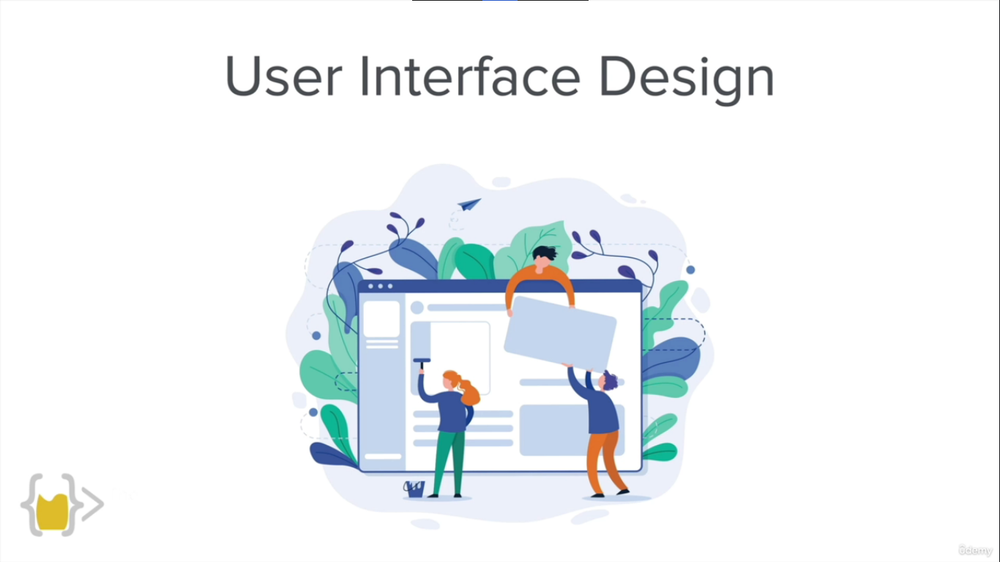
Now take a look at this picture.

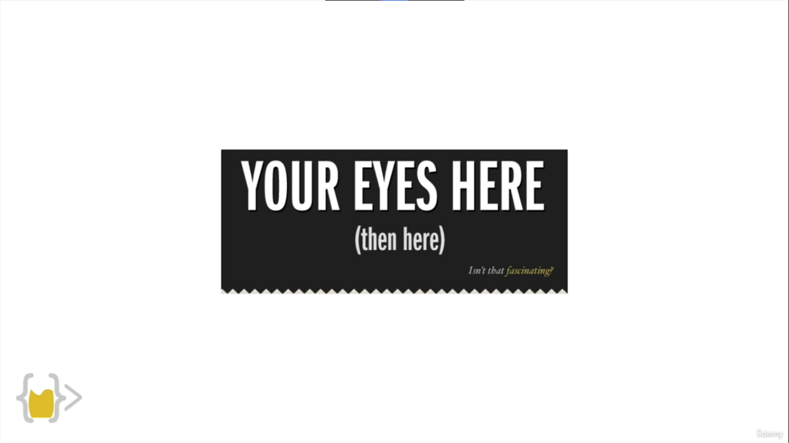
In most cases, 99% of you would have read "YOUR EYE HERE" first, "then here" then
"Isn't that fascinating?"
So this is just a way that our brains work.
We're always drawn to the bigger bolder square of things.
And As designers, we can use this knowledge to define hierarchy.

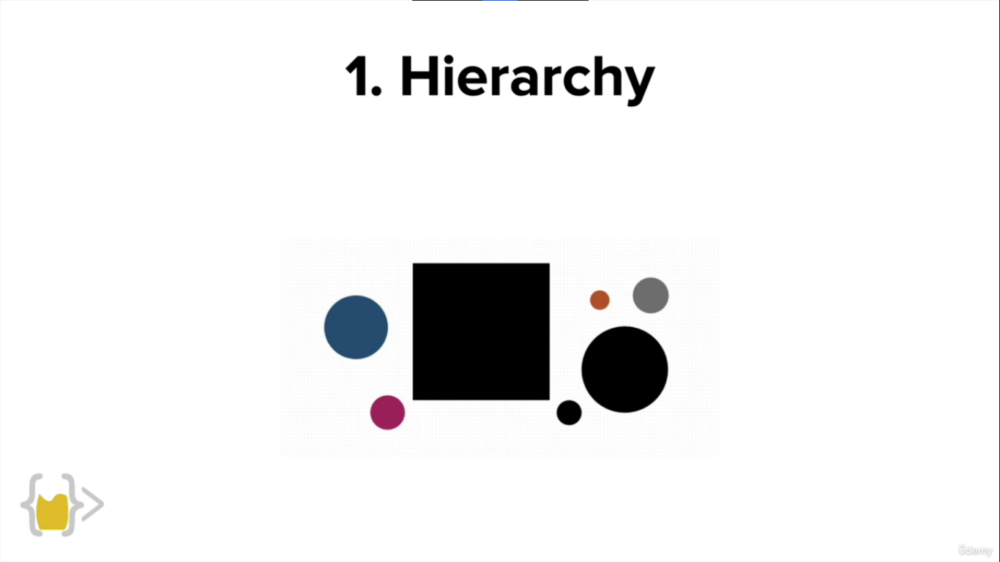
So let's say that you were to write a birthday invites to Jane.

You could write it like this. But all of the information has equal weighting.
So as a reader, I have to go through the entire paragraph and I can't just skim through it to get the
important bits.
So it's gonna take me a lot longer
right? Now on the other hand if I apply the rules of hierarchy then the most important information gets
conveyed over first and I make sure that Jane actually knows whose birthday party it is, where it is
and when they should go.
So we can establish hierarchy in a number of ways.
The most obvious is through the use of color.

So colors that really pop and stand out and have contrast with that background tend to be used for high
hierarchy.
So for example in this case if all the colors were the same, then it feels like they all have equal importance.
But on the other hand, if we have something that's very bright very standoutish versus something that's
a bit more grade, a bit more muted, then we know exactly where our eyes will go to first.
Now if you take a look at this example this is the ASOS website. And their predominant color palette

is the sort of gray and white color. But they've really cleverly used their accent tone, this green and
red, to really tell the user what they think you should really look at.
And it seems like ASOS really cares that you know that they have an outlet and also that you add your
product to the bag so that they can actually make money off you.
So, in this case, they're using that green accent tone to really pull the eyes to that button and make sure
that the user actually completes their transaction.
Now in addition to color, you should also think about

size because as I said, the bigger items often draw your eyes to it.
So, for example, if you look at the Coin-base website which you can use to buy cryptocurrency, we can see

the first thing they want to tell you is you can use this website to buy and sell cryptocurrency.
Now the next biggest thing on the page is this huge email input and a button that says "Get started".
So because a lot of these companies run ads and they're paying for users to land on their page, it's really
important for them to capture the emails.
This is kind of what this design is representing
right?
As long as you land on this page, you're probably going to want to look at this place where you put in
your email address and get started so that the company can capture your information.
Now in addition to establishing hierarchy in terms of user interface, you should think about the layout
of your website.

You can of course, on one hand, have this big block of text which is just your website where everything
is all laid out in the same kind of way
or you can create more interest by creating a block of text and then interspersed with pictures and
then create some different sizes and different shapes and different hierarchies to make your design look more interesting.
Now the Wikipedia pages are a example in bad design because just look at how bland it looks.

It really is trying to be an encyclopedia but it doesn't have to be like this. Now
one of the most noticeable things about Wikipedia is just the length of each block of text.
Just look at how long each line of text is.
It's very hard for a user to keep their eyes tracking along the same line.
And in fact, in terms of user interface design, there's an optimal line length. Too long and it gets a

little bit tedious to read. But too short it feels a bit too choppy and it's a bit awkward to read.
So you want to aim for something around 40 to 60 characters per line so that it feels comfortable to
the user and they'll be able to get through the information and still be interested in your website.
Now when you have good layout like Grammarly's website, it's not only interesting but it also chops

up the content into smaller pieces so that you actually get through more of the website and you take
more of it in.
Now another thing I want to talk about is alignment.

This has to do with how you position each of the elements on the screen relative to each other.
So take a look at the example on the left. The top title is center-aligned whereas the body text is
left-aligned. And it makes it look a little bit awkward like they're not really meant to be together.
Now on the right however just by shifting the alignment so that both starting points are the same for
the title and the body, it suddenly looks a lot more consistent and a lot more designed.
Now one of the easiest ways of making any sort of design you create look professional is just to reduce
the number of alignment points.
So let's say that you're creating a slide deck for your next presentation or you're creating a poster
for your birthday party,

take a look at all the things that are on the design and identify a line which goes through the beginning
of each item.
Now if you can reduce the number of lines like we have done here on the right then suddenly the design
looks a lot more coherent like all the pieces are meant to be together.
And it just looks a lot more professional.
So use these grid lines in your designed to help you visualize where the starting points of each element

is and try to line them all up.
Because even if you do nothing else but just alignment, you can see in this case the left looks a lot

more sloppy and the right looks a lot more designed and more professional. And all that's changed, there's
no change in the color, there's no change in typography, it's just the alignment.
Now a really important concept in all design is White Space. And white space refers to the empty space that's around text or round your elements.

Now sometimes when I'm on the high street I come across one of these luxury handbag or shoe shops and
I look through the window.
Now here's an experiment.
Take a look at this shop that sells handbags and take a look at this one.


Now how much are you willing to pay for a handbag from this shop versus this one.
Now this is really a use case for white space.
A lot of luxury shops, luxury designer stores,
one of their simplest tools is just injecting white space around their products, space things out and it
makes everything suddenly look a lot more expensive. Whereas when you have everything all tightly crammed
together and you have a lot of product on show, it makes it look like it's some sort of discount store.
And the same principle applies when it comes to digital design as well.
Let's say you have an ad for noise cancelling headphones.

If you have loads of things on screen, there's "New", "Only $20", "100% noise cancellation".
It makes the product look really cheap. Whereas if you injected some white space, all of a sudden it looks
like Apple made it right? Just by adding that space around each element on the screen
you can make your design a lot more minimalist and at the same time elevate it.
Now the last thing on User Interface design I want to talk about and probably the most important is
design for your audience.

A lot of things I've said, including not using comic-sans,
it really depends on your audience.
Let's say you're designing a children's concert poster, the one on the right looks like something that

children might actually want to go to. The one on the left looks a bit like a funeral advertisement.
It's so serious. It's so black and white and it's so severe looking that no child is kind of want to
go to that concert.
So think about your audience.
Think about what would appeal to them and what's important to convey to them. That it's going to be a
fun concert or that it's going to be boring adults who are going to be reading newspapers and some sort
of classical band in the background.
When you're designing websites design it for your audience even

if it's something a little bit messier, a little bit bolder in terms of color, as long as it fits your
audience and that's perfectly fine.
So have the flexibility in your design so that you're not just creating one style all the time. You're
creating one style for a particular audience like teenagers who want to buy clothes and you're creating

a different style for people who want to buy and sell cryptocurrency or have a medical website.
So the flexibility in your design skills is really important when it comes to User Interface design.
But keep in mind those
Five things:
1.Hierarchy,

2.layout,

3.alignment,

4.white space and

5.your audience
and you'll be well on the way to creating more beautiful user interfaces for your websites.
User Experience (UX) Design
Overview:-
Now, so far we've talked about the three pillars of web design: Color Theory, Typography, User Interface
design and now I want to talk about the last pillar, User Experience design.

Now a lot of people often get confused about what exactly is UX or User Experience?

And one of the best ways I've heard it explained is through the story of the renovation of a college.
So this is a picture of Reed College in the US and let's just use it as our imaginary backdrop.

So this college decided that it needed to undergo serious renovation. Tearing down the buildings, building
new ones and completely reform the campus.
So they invited this well-known architect who is very respected in his field.
He came and he did a great job with all the buildings and the provost was really really happy.
He was like "This looks great."
But he had one question.
"Hey Mr. Architect. It seemed like you've just left lawn across the entire campus. Where are all the path that
people are going to walk on to get between the buildings?" At this point
the architect says "Don't worry. I'll come back in a year and all will be revealed."
So in a year the paths where people need to naturally walk becomes trotted down and the grass gets worn
down revealing these paths that people need.

And it's at this point when the architect actually lays down all the tiles and paves these paths.
So this is kind of the difference between user experience and design. Design
we often think of having an aesthetic, what we think looks good and enforcing that on the user.
Now user experience is meant to be invisible.
If you have a good experience with a website it's meant to be unobtrusive and it just lets you do your
thing and it feels like as if everything is easy and everything is effortless.
So this is what we're aiming for.
And in order to do that we have to think about again five things.
The first is simplicity.

Keeping things simple is always better than making it more complex or more cluttered.
So this is a website called Sina and it's one of the biggest News websites in China.

Now every time I look at it though I get a headache because it is just so dense.
There are so many links and my brain gets overwhelmed and I say "Nope, can't do it."
So take a look at this alternative.

This is Monocle, which is also a News website.
But look at how they've managed to chop up the content, provides some interest for the eyes.
There's a little bit of dialogue, some images, some videos, a little bit of text.
It's never overwhelming.
And with that consistent color scheme and typography, it's really delightful to actually read rather
than this experience of sort of hurting your eyes with design.
This is a much nicer user experience because it's simple.
So whenever you're having to choose, should I make it more complex or should I make it more simple,
always try to pare it down.
The second point is consistency.

Keep your designs consistent but also keep the functionality of your product consistent.
So here's an example.
This is the webpage for Xfinity. Xfinity is a really big communications company in the US and they

are responsible for various things like providing TV and providing internet.
Here are three screenshots from various parts of their website.
One is their home page,
the second is their TV offerings and the last one is their News site.
And if you take a look at the top navigation bar not only do you see that they've changed up the design
of the navigation bar between the different parts of their website,
they also made it work a little bit differently.
The buttons are not all in the same place, the search bar moves around.
And that inconsistency means that a user is going to be confused when they go from one part of the website
to another, having to re-learn how to use your website.
If you think about the target audience of this company Xfinity, a lot of them are going to be a little
bit older right?
And having this inconsistent functionality and inconsistent design will really make those users have
a bad experience with this website.
Now the next thing to think about when you're designing your website is to take into account people's
Reading patterns.

Now they've looked at how human eyes track a webpage and which parts they look at when they're browsing.
And one of the most common reading patterns is what's called the F-pattern where the eye starts at the
top left of the corner and then it tracks the right and then it flips back again
browsing down the left gutter.
So you have often things like bullet points or pictures or icons, buttons, they're all on the left.
So you can design for this by using the F-layout.

So have the most important parts of your content on the left gutter, have the logo at the top and have
everything follow this pattern.
For example like this website for Big-commerce.

See how the eye is being naturally accommodated going from left to right.
Now another really common pattern for reading is the Z-pattern where our eyes go from left to right and then
zigzagging down all the way the website.

Now this of course depends on the type of website.
So you have something that's more sparse with more video content or if somebody is trying to browse
a website a little bit faster,
you see them using this layout. And this layout is used pretty famously in the Facebook website

using that Z-pattern to accommodate for people's natural reading pattern.
So have a think about this. Have a think about how people naturally looks at the page and place your
content in that pattern to make it easier for people who are using your website.
Now in today's day and age, it's really important to think about
All Platform Design.

It's not enough anymore to just design a website that's meant to go into a desktop computer.
Instead you have to think about mobile as well.

So having a website that scales up nicely onto mobile, what we call mobile responsive, is really important.
You don't want a big website that's designed to take up a landscape kind of screen to be crammed into
a phone
that's actually more like a portrait shape.
This looks really bad.
It's very hard to read the individual links and, more often than not, my fingers are actually too big to tap
onto the length that I want.
So this is a really bad user experience.
Now this can happen the opposite way as well.
So a design that looks much better on mobile but then when it's rendered on a desktop with a wide kind
of screen, it doesn't use up enough of the screen real estate. For example,

this is the Facebook latest redesign of their website.
And you've got all of this empty space that's not being used at all and everything is crammed into the
middle.
This is not very efficient. So have a think about how you're using the available space and make sure
that your website rearranges itself when it's being rendered on a portrait smaller screen vs. a larger desktop screen.
And try to avoid one of my pet peeves in terms of design which is having so many banners

on your website that show up on the mobile version that your content becomes impossibly small.
And even when you're scrolling it's like you're scrolling it on an Apple Watch or something.
Whereas all of this extra content is taken up by warnings and banners and cookies and it's just not
a very good user experience.
But on the other hand, don't go crazy either.

Don't make your entire website just one part like a picture or a piece of text scaling it up massively
like this is also very very awkward because then I have to just keep scrolling until forever before
I can actually read and take in all of the content.
So strike a happy medium.
And most importantly test, test, test.
Give it to other users.
You can employ professional testers to try out your website and give you feedback.
Now if you can't afford that, just use your family and friends. And bake some cookies for them,
get them to test out your website and start getting some feedback on how you can improve the design.
Now finally we've talked a lot about user experience and how to get people to have a good time.
Now some designers though use the knowledge they have about human psychology and User Interface and

User Experience design to do bad things.
And in the design world, we call these dark patterns. So patterns which get a user to perform an action
or behavior that is beneficial to the company or the designer
but it's not necessarily what the user wants.
And this I would say is another form of bad user experience.
So let me give you some examples.
This is a real life example. Let's say that you walked into Waitrose which is a big supermarket in the
UK and you bought yourself a sandwich.

Now when you look at it at the point when you're buying it, it looks like this sandwich is going to be
full length from edge to edge
right?
But then when you rip open the packaging you're disappointed when you find that actually all that's
in the middle is just air and your sandwich turns out to be a lot smaller than you initially thought.
It is the worst feeling in the world.
This is a feeling that I can't stand when my food suddenly gets reduced in size.
It's like as if somebody came along and took food out of your plate.
In the digital world,
people do the same thing. The same kind of trickery that's meant to get you to perform an action that
you don't necessarily want and you end up feeling really disappointed and really upset. With Amazon every
single time

I have to re-click the free delivery button which I've earned by buying so much product from them.
But they still try to trick you using the things that we've learned about hierarchy
for example. Here the button that makes the more money "Express delivery" is highlighted in orange.
It pops out a lot more.
It's a lot more likely that you'll want to click on it.
But in all likelihood, you're probably happy with just normal delivery and you're now tricked into paying
more for this delivery.
Now here's another example

that's actually true the evil.
This is a Snapchat ad for some shoes.
But what the designer has cleverly done on the advertising is they've placed a one pixel curved line
on this ad which makes it kind of look a bit like a hair is on your screen. But when you go into that
screen and you try to get rid of that piece of hair, well you've tapped on an avenue.
So the ad takes you to the website and the advertisers make money off each click.
And this is truly a dog pattern because it's just tricking you to do something you didn't want to.
Whereas good design is about helping people do what they want to do and giving them a good experience
while they're at it.
Now the king of dog patterns is Ryan-Air and it's a low cost airline in Europe which is really known for

sort of charging you for every single little thing.
I wouldn't be surprised if tomorrow they suddenly charged you for using the toilet on the plane.
But here's what the website looks like when you tried to buy an airplane ticket.

In order to buy your airplane ticket you have to go through all of these extra addon’s including saying "No I don't want to
buy travel insurance." But look at how they've hidden it inside this big dropdown list and it's not even
at the beginning of the list.

It's actually sorted alphabetically below Denmark for some reason.
And this just makes it so much harder for you to find that option
and for you to actually accidentally end up buying travel insurance.
Now the final example and probably one of the dog patterns I dislike the most is these checkboxes. You
know right below you filled in a form,
you get these checkboxes and sometimes the wording is so confusing that I really don't know what I'm
signing up for.

chat-GPT Response:-

Like this one: If you would like us to no longer continue to stop not sending you special deals and offers
every week, please indicate you are inclined to yes
by not checking the box. I have no idea what clicking that box does.
I really just... I don't know.
I might click it, I might not.
I don't know what it does. But it's horribly confusing and it's not a good user experience at all.
I will bet you that after I sign up I'm never going to come back to this website again
right?
Are you with me?
Now
we've seen what good websites look like.

We've seen what bad websites look like.

We've even seen what evil websites look like.

But it's time to put our knowledge to the test by designing our own website from scratch and applying
these four pillars of web design to this project.

So have a think about what you've learned so far and apply it to your own website.